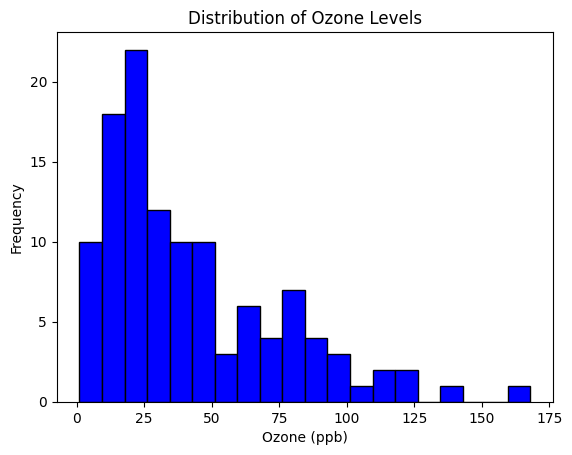
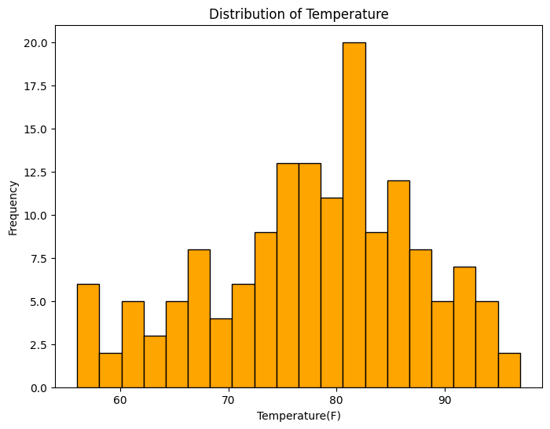
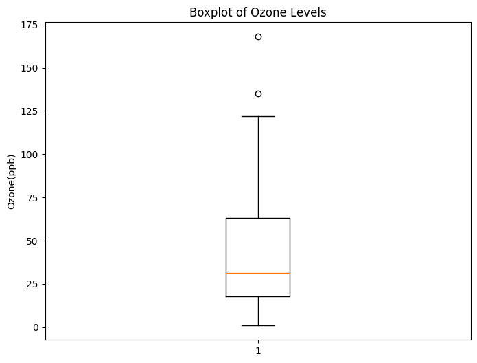
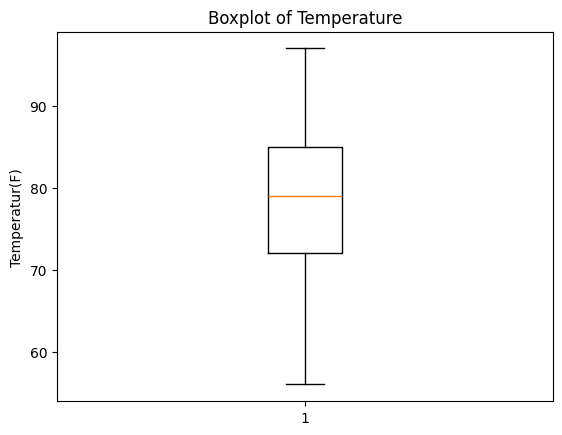
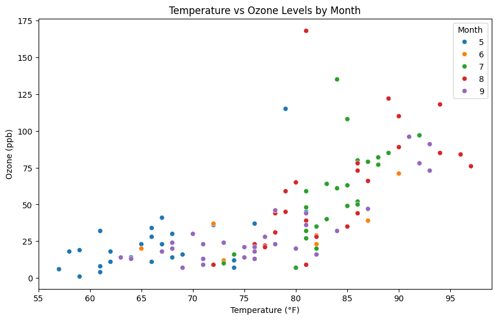
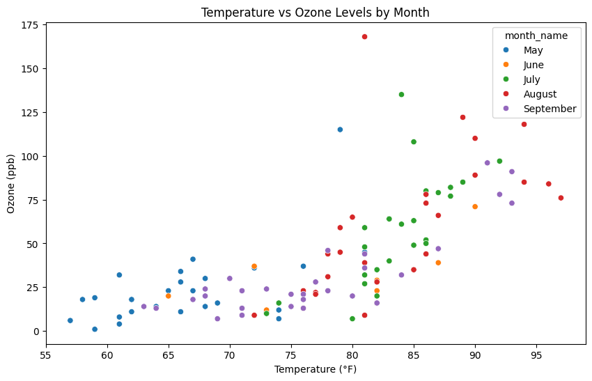
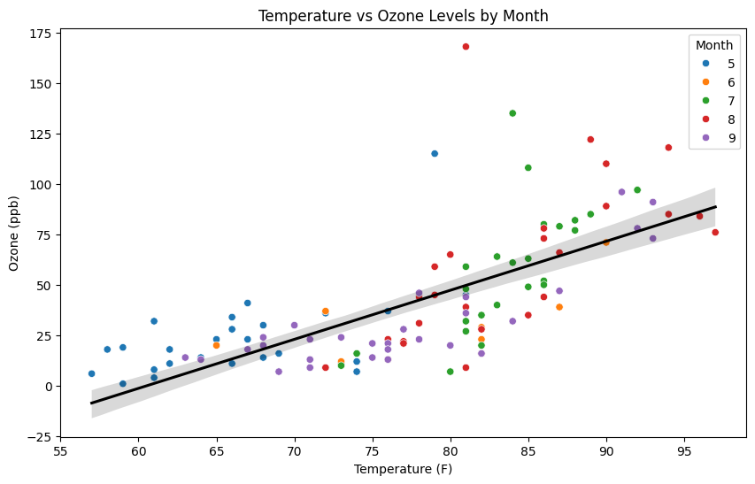

11.1 This is a markdown title. Markdown is the same as html.
11.1.1 In markdown items appear as listed. Remember to switch from code to markdown to see the effect of markdown.
11.1.2 Then press cntr and enter on the keyboard.
item 1
item 2
item 3
We can also create a list 1. ‘Great art thou o Lord’ 2. Marvelous God 3. Equilibrium 4. Visualization is fun 5. Dr. V is the best.
We can bolden with double hyterix, also italic with the single hysterix.
import numpy as np# here numpy is imported with an alias called nparr = np.array([1,2,3,4,5])print (np.absolute (-1))print(arr)## Lists: Lists are pythons native way of storing multiple items in a single variable.my_list = [1,2,3,4,5,6]print(my_list)
1
[1 2 3 4 5]
[1, 2, 3, 4, 5, 6]
11.2 DataFrames:
11.2.1 pandas provide a flexible structure called DataFrame for storing tabular data.
# Single hash is used for comment in Python.# Now we will load the csv from the Scripts folder in our virtual environment (venv)# Read it into a datafram called df using pandas command read_csvdf = pd.read_csv('airquality_datasets.csv')
#Summary of the dataset. Tbl now in df.print(df.info())print(df.describe())
import matplotlib.pyplot as plt# Ozone Histogramplt.hist(df['Ozone'].dropna(), bins=20, color='blue', edgecolor='black')plt.title('Distribution of Ozone Levels')plt.xlabel('Ozone (ppb)')plt.ylabel('Frequency')plt.savefig('Hist_Ozone_vfashina.png', dpi=300, bbox_inches='tight')plt.show()

11.3 Ozone Histogram
11.3.1 Histogram visualizes the spread of a variable across a dataset. Here we will see the spread of Ozone across the dataset.
11.3.2 Ozone readings (ppb) within the range of 0 - 175 appeared 20 times within the data set.
#Temperature plotplt.figure(figsize=(8,6))plt.hist(df['Temp'].dropna(), bins=20, color='orange', edgecolor='black')plt.title('Distribution of Temperature')plt.xlabel('Temperature(F)')plt.ylabel('Frequency')plt.savefig('HistTemp_vfashina.png', dpi=300, bbox_inches='tight')plt.show()

11.4 Temperature plot
11.4.1 Next we will visualize the spread of temperature across the data set.
11.4.2 Temperature range between 55 - 95 degrees appear 20 times within the data set.
#Boxplot for Ozoneplt.figure(figsize=(8,6))plt.boxplot(df['Ozone'].dropna())plt.title('Boxplot of Ozone Levels')plt.ylabel('Ozone(ppb)')plt.savefig('BoxPlotOzone.png', dpi=300, bbox_inches='tight')plt.show()

11.5 Box Plot for Ozone
11.5.1 The central box represents the interquartile range (IQR), which contains the middle 50% of the data.
11.5.2 The lower edge of the box is the 25th percentile (Q1), and the upper edge is the 75th percentile (Q3).
11.5.3 In this case, it indicates that most ozone levels are between approximately 15 and 55 parts per billion (ppb).
11.5.4 The dots outside the upper whisker indicate potential outliers.
11.5.5 This box plot summarizes the ozone levels, showing the range, central tendency, and variability, and highlights the presence of a few extreme values (outliers).
#Boxplot for Tempplt.figure(figure=(8, 6))plt.boxplot(df['Temp'].dropna())plt.title('Boxplot of Temperature')plt.ylabel('Temperatur(F)')plt.savefig('BoxPlottemp.png', dpi=300, bbox_inches='tight')plt.show()

11.6 Box Plot for Temp
11.6.1 Refer to above analysis of boxplot. Here there are no outliers.
11.6.2 In summary, this box plot shows that the majority of the temperatures in the dataset are concentrated between 70°F and 90°F, with a median of around 80°F, and no extreme temperature values (outliers) are present.
# Scatter plot Ozone vs Temp, better VIZ for categoricalplt.figure(figsize=(10, 6))sns.scatterplot(x='Temp', y='Ozone', hue='Month', data=df)plt.title('Temperature vs Ozone Levels by Month')plt.xlabel('Temperature (°F)')plt.ylabel('Ozone (ppb)')plt.savefig('ScatterPlotTempVsOzone.png', dpi=300, bbox_inches='tight')plt.show()

# Convert the numeric month to the month namedf['month_name'] = pd.to_datetime(df['Month'], format='%m').dt.strftime('%B')print(df) # to see our new variable added to the dataframe
Ozone Solar.R Wind Temp Month Day month_name
0 41.0 190.0 7.4 67 5 1 May
1 36.0 118.0 8.0 72 5 2 May
2 12.0 149.0 12.6 74 5 3 May
3 18.0 313.0 11.5 62 5 4 May
4 NaN NaN 14.3 56 5 5 May
.. ... ... ... ... ... ... ...
148 30.0 193.0 6.9 70 9 26 September
149 NaN 145.0 13.2 77 9 27 September
150 14.0 191.0 14.3 75 9 28 September
151 18.0 131.0 8.0 76 9 29 September
152 20.0 223.0 11.5 68 9 30 September
[153 rows x 7 columns]
# Scatter plot Ozone vs Temp, better names and hueplt.figure(figsize=(10, 6))sns.scatterplot(x='Temp', y='Ozone', hue='month_name', data=df) # new variable named month-nameplt.title('Temperature vs Ozone Levels by Month')plt.xlabel('Temperature (°F)')plt.ylabel('Ozone (ppb)')plt.savefig('ScatterPlotTempVsOzone.png', dpi=300, bbox_inches='tight')plt.show()

import seaborn as sns#Scatter plot with regression line#sns.lmplot(x='Temp', y='Ozone', hue='Month', data=df, height=5, aspect=1.5)plt.figure(figsize=(10, 6))sns.scatterplot(x='Temp', y='Ozone', hue='Month', data=df)df['Month'] = df['Month'].astype('category')sns.regplot(x='Temp', y='Ozone', data=df, scatter=False, color='black') # scatter=False will only show the regression lineplt.title('Temperature vs Ozone Levels by Month')plt.xlabel('Temperature (F)')plt.ylabel('Ozone (ppb)')plt.savefig('ScatterPltRegLineTempVsOzon.png', dpi=300, bbox_inches='tight')plt.show()

11.7 Scatter Plot with Regression Line
11.7.1 Observation
11.7.2 This scatter plot with a regression line displays the relationship between temperature (Fahrenheit) and ozone levels (in parts per billion, ppb).
11.7.3 With the data points color-coded by month. There is a clear positive correlation between temperature and ozone levels.
11.7.4 As the temperature increases, the ozone levels tend to rise as well. This is indicated by the upward slope of the regression line.
11.7.5 Spread of Data- While the trend is positive, there is variability in ozone levels at each temperature. This can be seen in the spread of the points, especially at higher temperatures (above 80°F), where ozone levels range significantly.
11.7.6 Monthly Variation- The colors, corresponding to different months, show how ozone levels vary throughout the months. While the general trend remains consistent, there are slight differences in ozone concentrations at the same temperature for different months. For instance, data points from month 9 (September) are mostly seen at higher temperatures and higher ozone levels compared to earlier months.
11.7.7 Regression Line- The black regression line provides an average trend across all months. Despite different monthly data points, the line gives a summary of how ozone levels respond to changes in temperature.
11.7.8 Conclusion-
11.7.9 The plot suggests that higher temperatures are associated with increased ozone levels, which could be due to chemical reactions that are emperature-dependent, such as the formation of ground-level ozone. The color variation indicates that there are monthly differences, possibly related to seasonal changes, but the general positive trend holds across the months shown.
11.8.2 This correlation matrix heatmap shows the relationships between three variables: Ozone, Temperature (Temp), and Wind.
11.8.3 The values range from -1 to 1, representing the strength and direction of the linear relationship between the variables.
11.9 Observations:
11.9.1 Diagonal Elements- The diagonal elements (Ozone-Ozone, Temp-Temp, Wind-Wind) are all equal to 1, which is expected because any variable is perfectly correlated with itself.
11.9.2 Ozone and Temperature (0.7)- There is a positive correlation (0.7) between Ozone and Temperature. This indicates that as the temperature increases, the ozone levels also tend to increase. A value of 0.7 shows a fairly strong positive relationship.
11.9.3 Ozone and Wind (-0.6)- There is a negative correlation (-0.6) between Ozone and Wind. This means that higher wind speeds are generally associated with lower ozone levels. The -0.6 value suggests a moderately strong negative relationship.
11.9.4 Temperature and Wind (-0.46)- There is a negative correlation (-0.46) between Temperature and Wind. This indicates that as temperatures increase, wind speeds tend to decrease, but the relationship is not as strong as the Ozone-Wind correlation.
11.9.5 Summary:
11.9.6 The matrix reveals that ozone levels are more strongly associated with temperature than wind speed. However, both wind and temperature influence ozone levels in different ways; temperature increases ozone levels, while higher wind speeds tend to decrease them.
11.9.7 Wind speed has a moderate inverse relationship with both temperature and ozone levels, likely due to the fact that stronger winds help disperse ozone and reduce its concentration in the atmosphere.
11.9.8 This correlation matrix is helpful for understanding how these variables interact, and can provide insights for further analysis or modeling of environmental data.